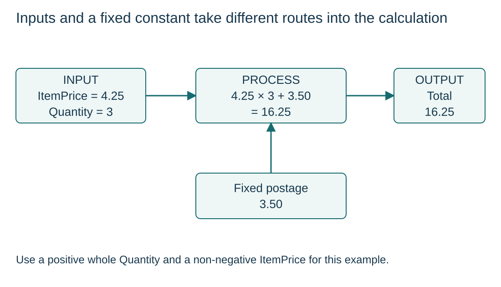

Identify supplied data and required results
S9.05.A01
Visual overview
Inputs and a fixed constant take different routes into the calculation

Visual transcript
- ItemPrice is 4.25 and Quantity is 3; fixed postage is 3.50.
- Processing calculates 4.25 × 3 + 3.50 = 16.25, then outputs Total.
- Postage is supplied by the problem as a constant, so it need not be input on every run.
Core explanation
Work backwards from the required result
- Output: Identify what the algorithm must communicate.
- Process: State the transformations and decisions that produce it, including compatible measurement units.
- Input: Identify which values must be obtained and when. A fixed supplied constant need not be input each run.
Turn the design into executable steps
An IPO table is a design aid. Translate its rules into explicit assignments or control structures when pseudocode is requested. Here the fixed postage 3.50 joins ItemPrice × Quantity to produce Total.
Worked example · Calculate an order total
- Requirements
An order contains Quantity identical items at ItemPrice each, plus fixed postage of 3.50. Assume non-negative prices and positive whole quantities.
- Pseudocode
DECLARE ItemPrice : REAL DECLARE Quantity : INTEGER DECLARE Total : REAL INPUT ItemPrice INPUT Quantity Total <- ItemPrice * Quantity + 3.50 OUTPUT Total - Check
ItemPrice 4.25 and Quantity 3 give 12.75 + 3.50 = 16.25.